Tableaux analytiquesIndex des noms propres Tableaux des personnages Répertoire
(autres noms propres)Glossaire Dictionnaire des fréquences Notes
Topographie du sitePlan du site Index de l'apparat critique Bibliographie Liens externes Liens vers Gallica
SupportGuide de la navigation FAQ Nouveautés Remerciements Auteur du site
Effacer les témoins
(cookies)X
Accueil Préface Choix éditoriaux Les Quatrièmes parties Les
IntroductionsAstréesposthumes L'Édition de Vaganay Présentation des textes Pleins feux sur
L'Astrée
Lecture de
L'AstréeI
Éd. de référenceepartie 1621 II
epartie 1621 III
epartie 1621 IV
epartie 1624
I
Éd. préliminaireepartie 1607 II
epartie 1610 III
epartie 1619
Éd. fonctionnelleavec gravuresI
epartie II
epartie III
epartie IV
epartie
en Word
Éd. téléchargeableen Word
Chronologie historique
Résumédes intrigues
APPARAT CRITIQUEÉvolution de
Le romanL'AstréeVariantes confrontées Variantes, I
epartie Variantes, II
epartie Variantes, III
epartie Analyse des illustrations Parallèles suggérés Résumé des intrigues Chronologie historique Témoignages Du Crozet Sorel Guéret Poèmes de Lingendes
Biographie Biographes, critiques Événements Généalogie Testament Inventaire Héritages Poèmes Épîtres Lettres Remarques
Le romanciersur Malherbe
Bibliographie Liens externes Liens vers Gallica Cartothèque Galerie de portraits Film d'Eric Rohmer Partitions d'A. Naigeon Photos du Forez
Ressources

«
@
»
X

avancéeRecherche ciblée Fils d'Arianne Hyperbase (É. Brunet) Accès aux pages/folios Concordances-Vaganay
police condenséeL'AstréeRésumé du roman Chronologie historique Choix éditoriaux Présentation des textes Évolution Illustrations
 Annexe
Annexe

L'Astrée
L'Astrée fonctionnelle
L'Astrée

Livre 6

Livre 8
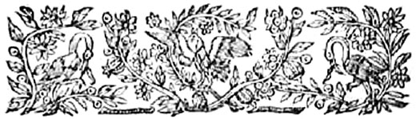
L'Astrée
d'Honoré d'Urfé
Troisième partie
Livre 7
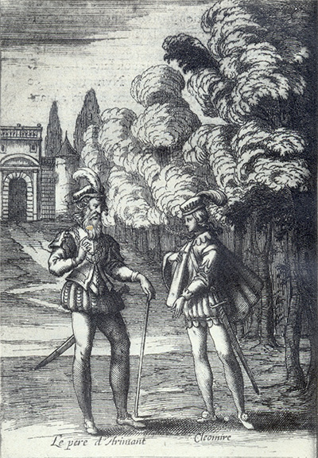
Cléomire raconte l'histoire de Criséide au père d'Arimant (III, 7, 326 recto)
L'AstréeIII, 7. Édition Vaganay**, 1925Cléomire raconte l'histoire de Criséide au père d'Arimant (III, 7, 326 recto)
(Voir Illustrations)
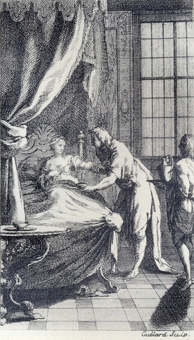
Gravure signée Guélard
Criséide tend son bras au chirurgien qui la saigne (III, 7, 307 verso)
L'AstréeIII, 7. Édition Vaganay**, 1925Gravure signée Guélard
Criséide tend son bras au chirurgien qui la saigne (III, 7, 307 verso)
(Voir Illustrations)
Éd. de 1619, 256 verso sic 254 verso.
Éd. Vaganay, III, p. 343.
POurquoi faut-il l'aimer, puisqu'elle est insensible,
Ou
η n'a nul sentiment que pour s'armer le cœur
Contre un fidèle Amant de nouvelle rigueur,
À tout autre pouvoir
se
rendant invincible ?
Pourquoi faut-il l'aimer, puis qu'il est impossible
De pouvoir par Amour en être le vainqueur,
Ni gagner
son esprit par peine ou par longueur,
Et qu'y perdre le temps, c'est l'espoir
η infaillible ?
Mais pourquoi ne l'aimer si telle est sa beauté
Que de ne l'aimer point, ce serait lâcheté,
Et que de la quitter n'est plus en ma puissance ?
Mais c'est perdre le temps, la peine et le souci.
Peut-être Amour vaincra, que s'il n'advient ainsi,
N'est-ce assez de l'aimer pour toute récompense ?
I.
C
Eux qui veulent vivre en servage,
Peuvent comme esclaves
η mourir,
Hylas jamais n'a pu souffrir
Que l'on lui fît un tel outrage !
Change d'humeur qui s'y plaira,
Jamais Hylas ne changera.
II.
Il est certain, Hylas vous aime.
Mais savez-vous, belle Alexis,
De son amour quel est le prix ?
Le prix
d'Amour, c'est l'Amour même ! " Change d'humeur qui s'y plaira, Jamais Hylas ne changera.
III.
Languir auprès d'une cruelle,
C'est un bien maigre passe-temps ;
Et c'est en quoi je ne m'entends.
Il vaut mieux être infidèle :
Change d'humeur qui s'y plaira,
Jamais Hylas ne changera.
IV.
Mais pour ne le trouver étrange,
Qu'égale entre nous soit la loi :
Comme je vous aime, aimez-moi,
Et me changez si je vous change.
Change d'humeur qui s'y plaira,
Jamais Hylas ne changera.
V.
Ainsi d'une si douce vie
Nul de nous ne se lassera,
Parce que celui changera
Qui premier en aura l'envie.
Change d'humeur qui s'y plaira,
Jamais Hylas ne changera
VI.
Et si jamais je vous en blâme,
Que je puisse mourir d'amour,
Ou bien que j'aime quelque jour
Longuement une laide femme.
Change d'humeur qui s'y plaira,
Jamais Hylas ne changera.
Et si jamais je vous en blâme,
Que je puisse mourir d'amour,
Ou bien que j'aime quelque jour
Longuement une laide femme.
Change d'humeur qui s'y plaira,
Jamais Hylas ne changera.
Histoire
de Criséide et d'Arimant.
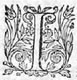
IL est
certainque la fortune ne se plaît pas seulement à troubler les Monarchies et les grands États,
mais encore passe son temps "
à montrer sa puissance sur les "
personnes privées, afin, comme je crois, de "
donner connaissance à chacun qu'il n'y "
I. 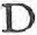
DOnc la mort sans plusdécouvrira mon deuil,
Et quand d'un voile noir elle clora mon œil,
Elle ouvrira ma bouche.
Et ne
faut espérer que le mal que je sens
Découvre par ma voix la douleur qui me touche,
Qu'en mes derniers accents.
II.
Ainsi je porterai dans un même tombeau,
Sans déceler mon mal, la vie et le flambeau
Qui dans mon cœur s'allume.
Mais comme se peut-il qu'un feu si violent
Ne soit vu de quelqu'un, ou qu'au moins il ne fume
η,
Puisqu'il me va brûlant ?
III.
Il le faut toutefois, Amour le veut ainsi,
Amour qui fait dessein d'égaler mon souci
Aux morts plus inhumaines.
Il sait bien, le cruel ! que c'est quelque soulas, "
De pouvoir librement se plaindre de ses peines. "
C'est ce qu'il ne veut pas.
IV.
Contentons-le, mon cœur, ou bien nous éloignons
En des lieux écartés quand nous nous en plaignons,
De peur que la parole
Dont nous pensons nos maux recevoir guérison
Contre notre dessein ce devoir ne viole
Quoiqu'avec raison.
Contentons-le, mon cœur, ou bien nous éloignons
En des lieux écartés quand nous nous en plaignons,
De peur que la parole
Dont nous pensons nos maux recevoir guérison
η,Contre notre dessein ce devoir ne viole
Quoiqu'avec raison.
V.
Je dis avec raison, car de quels ennemis,
Pressé de sa douleur, ne serait-il permis
De plaindre sa misère ?
Amour seul le défend, et seulement à moi :
- Il te faut, me dit-il, te brûler et te taire
Pour me montrer ta foi.
VI.
Et bien je me tairai, puisque l'Amour le veut,
Amour qui me commande, et si mon cœur ne peut
Celer du tout ma flamme,
Loin, bien loin de chacun je m'en irai cacher,
Et ne découvrirai les secrets de mon âme
Qu'au plus secret rocher.
VII.
Là parmi les replis des rochers caverneux,
Et les divers détours des
antresépineux, Aux lieux
η plus solitaires, Avant que de mourir je dirai mes douleurs, Et supplierai ces lieux d'être les secrétaires
η De mes secrets malheurs.
VIII.
Peut-être
Ma cruelle y viendra conduite par le sort,
Allégeance tardive !
Et que, voyant gravés aux arbres d'alentour
Les chiffres de nos noms, elle dira, pensive,
- Il avait de l'amour.
IX.
Pour certain il aimait, dira-t-elle en son cœur,
Et lors amollissant ce rocher de rigueur,
Que pour cœur elle porte,
Elle regrettera la perte de mon temps.
Heureux dans le tombeau, si, plaignant de la sorte,
Un soupir j'en entends.
Peut-être
η adviendra-t-il qu'un jour, après ma mort,Ma cruelle y viendra conduite par le sort,
Allégeance tardive !
Et que, voyant gravés aux arbres d'alentour
Les chiffres de nos noms, elle dira, pensive,
- Il avait de l'amour.
IX.
Pour certain il aimait, dira-t-elle en son cœur,
Et lors amollissant ce rocher de rigueur,
Que pour cœur elle porte,
Elle regrettera la perte de mon temps.
Heureux dans le tombeau, si, plaignant de la sorte,
Un soupir j'en entends.
quelque temps, et qu'il jugea que j'étais à la fenêtre, il s'approcha tout seul, et chanta ces vers :
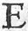ELle dit qu'elle m'aime, et veut par ses discours
Me faire croire enfin ses serments véritables.
Mais que lui sert cela, si j'apprends tous les jours,
Par de certains effets, que ce ne sont que fables ?
Ô parjures beautés, que vous êtes coupables !
Craignez-vous point les Dieux, pensez-vous qu'ils soient sourds,
Ou que vous ne soyez justement punissables
De jurer en dessein de faire le rebours ?
Elle dit qu'elle m'aime, et toutefois, cruelle,
Ne veut lire les maux que je souffre pour elle,
Refuse les écrits qu'Amour lui fait offrir.
N'est-ce pas en effet se moquer de ma flamme ?
Et puis-je croire Amour être dedans une âme
Dont les yeux seulement ne le peuvent souffrir ?
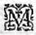MA plainte serait bien plus juste, si l'amitié que je vous porte me permettait de me pouvoir plaindre de vous ; et si la vôtre lui était égale, elle ne souffrirait non plus que vous pussiez vous douloir du refus que j'ai fait, ni que vous le prissiez pour un témoignage de peu d'amitié, puisqu'il n'est procédé que du dessein que j'ai eu d'être meilleure ménagère de mon honneur et de votre repos qu'en cette action vous ne l'avez été,
ce que je n'accuse
toutefois de défaut, mais plutôt d'excès d'affection, qui ne vous a laissé considérer en quel danger vous me mettiez, et en quelle obligation vous vous étreigniez envers une personne qui m'est inconnue et qui ne vous est assurée qu'autant que les présents auront de force. Soyez une autre fois, non pas avec moins d'Amour, mais avec plus de prudence, et vous contentez que je sais que vous m'aimez.
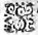SI je romps les serments qui sont faits entre nous,
Que le Ciel dessus moi, comme traître et parjure,
Où que j'aille vivant punisse cette injure,
Et qu'exemple à chacun je sois de son courroux.
Que s'il advient hélas ! qu'ils soient rompus de vous,
Dieux, éloignez de moi si malheureux augure !
Mais s'il doit advenir, que dans la sépulture
Loin des soucis humains je reçoive ces coups.
Que si, dedans les Cieux, l'heureuse destinée
M'ordonne quelquefois cette bonne journée
Où doivent s'accomplir les serments de tous deux,
Dieux, abrégez d'autant la longueur de ma vie,
Et ce jour m'approchez, si vous avez envie,
Entre tous les mortels, d'en voir un bienheureux !
Mais s'il doit advenir, que dans la sépulture
Loin des soucis humains je reçoive ces coups.
Que si, dedans les Cieux, l'heureuse destinée
M'ordonne quelquefois cette bonne journée
Où doivent s'accomplir les serments de tous deux,
Dieux, abrégez d'autant la longueur de ma vie,
Et ce jour m'approchez, si vous avez envie,
Entre tous les mortels, d'en voir un bienheureux !
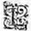L'On me veut éloigner d'ici, j'eusse dit de vous,si ce n'est que vous êtes toujours en mon cœur,
et que mon affection est telle qu'il est impossible
que je ne vive non seulement près de vous, mais en
vous-même ! Toutefois, il est certain que nous
changeons de demeure, je ne sais en quelle partie de
la terre ce sera. Mais si sais bien que pour belle
qu'elle puisse être à tout autre, ce me sera un
lieu de supplice si je ne vous y vois point ! Si je
la
η découvre, je vous en avertirai, afin que, s'il
vous est possible, vous puissiez être bientôt du
corps où vous serez toujours par ma pensée.
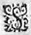SI ce n'est la plus cruelle infortune qui me pûtarriver que celle qui vous emmène, je ne sais
quelle pût être celle qui mérite ce nom. Vous
allez vers Ricimer,
le seul lieu de tout le monde
qui m'est le plus défendu ! Mais qu'il vous plaise
de me le commander, je vous y verrai bientôt, et
vous rendrai témoignage que mon
affection est plus
grande que tous les empêchements qui s'y peuvent
opposer.
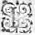LA fortunesemble de se lasser, elle veut mettrefin à mes peines. N'y consentirez-vous pas,Madame, et ne me donnerez-vous pas congé de sortirde ces continuelles peines ? Je vous en requiers
η
par
cette affection qui me porte au tombeau, et qui ne
diminuera jamais quoi que mes cendres deviennent.
VOus m'avez toujours assurée que vous feriez toutce que je vous ordonnerais :
Je vous commande de
vivre, afin que vous me puissiez plus longuement
servir. Je verrai s'il y a quelque chose qui ait
plus de pouvoir sur Arimant que moi.
JE m'en dédis, Arimant, Criséide vit encore, et
m'a commandé de vous en avertir. Elle mourut certes
quand je le vous mandai, mais les Dieux l'ont
ressuscitée pour vous. Vous êtes le plus
heureux
Chevalier qui vive, étant aimé de la plus belle
Dame de l'Univers, et seulement malheureux pour ne
pouvoir être témoin de votre bonheur.
N'Avoir tout le jour que des frayeurs, et desterreurs Paniques, et toute la nuit vous voir toute en sang, et avec un pied dans le cercueil me faire
signe que je vous suive, me trouble de sorte, que
je ne puis appeler vie
η
celle que je passe éloigné de vous. J'envoie ce porteur pour savoir comme se porte celle à qui je suis, je le suivrai de si près que j'espère le trouver à son retour à mi-chemin. Il faut qu'à ce coup la haine de Ricimer envers les miens cède à l'Amour que je vous porte.
Fin du septième livre.
Livre 6
Livre 8
Référence électronique :
document.write('"'+document.title.substr(0, document.title.indexOf("-")-1)+'". '+"Dernière mise à jour : "+ExtractDate(document.lastModified)+".")Deux visages de L'Astrée.
©2005-2020 E. Henein.
URL :
var today = new Date();
document.write(document.URL +
"<br>Consulté le : " + today.toLocaleDateString("fr-FR") + ".");
var _gaq = _gaq || [];
_gaq.push(['_setAccount', 'UA-19288475-1']);
_gaq.push(['_trackPageview']);
(function() {
var ga = document.createElement('script'); ga.type = 'text/javascript'; ga.async = true;
ga.src = ('https:' == document.location.protocol ? 'https://ssl' : 'http://www') + '.google-analytics.com/ga.js';
var s = document.getElementsByTagName('script')[0]; s.parentNode.insertBefore(ga, s);
})();
Deux visages de L'Astrée.
©2005-2019 Eglal Henein. Creative Commons 4 
Édition critique de la première partie de L'Astrée (1607, 1621)
mise en ligne le 9 avril 2007
Édition critique de la deuxième partie de L'Astrée (1610, 1621)
mise en ligne le 10 octobre 2010
Édition critique de la troisième partie de L'Astrée (1619, 1621)
mise en ligne le 1er novembre 2014
Édition critique de la quatrième partie de L'Astrée (1624)
mise en ligne le 15 janvier 2019
document.write("Dernière mise à jour : "+ExtractDate(document.lastModified))